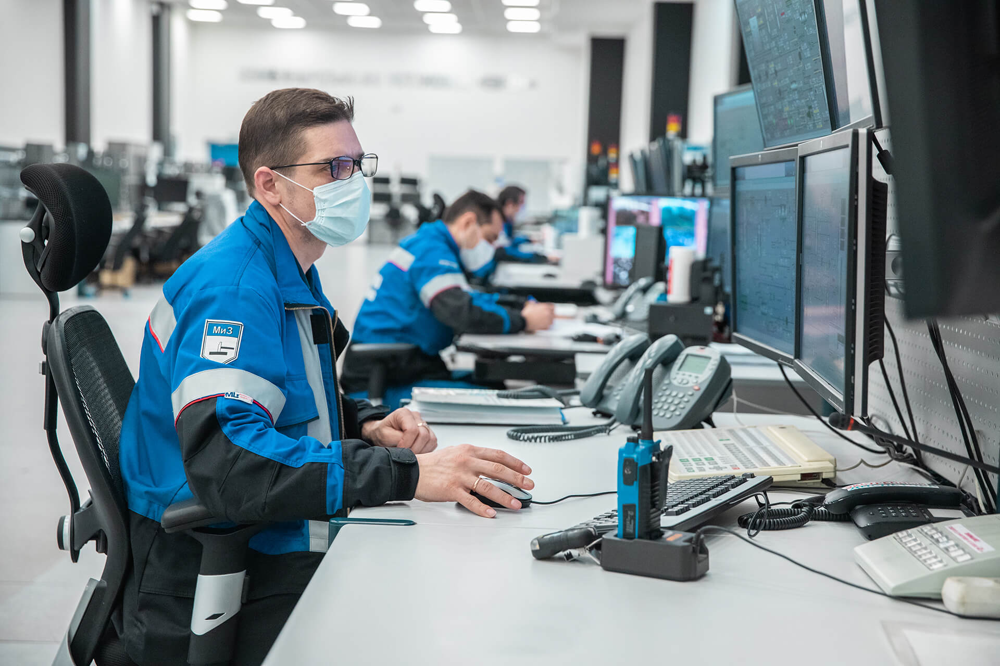

Выручка «Газпром нефти» за 6 месяцев 2018 года увеличилась на 24,4% по сравнению с аналогичным показателем прошлого года и составила 1 трлн 137,7 млрд руб. Положительная конъюнктура рынка нефти и нефтепродуктов, увеличение добычи на новых проектах компании и эффективные действия менеджмента «Газпром нефти» обеспечили рост показателя скорректированная EBITDA (прибыль до уплаты процентов, налога на прибыль и амортизации) на 49,8% по сравнению с уровнем первого полугодия 2017 года — до 368,2 млрд руб. Чистая прибыль, относящаяся к акционерам ПАО «Газпром нефть», за 6 месяцев 2018 года составила 166,4 млрд руб., увеличившись на 49,6%. Рост операционного денежного потока компании, а также завершение основных инфраструктурных инвестиций на новых проектах в добыче обеспечили получение положительного свободного денежного потока за первое полугодие 2018 года в размере 47,5 млрд руб.

«Газпром нефть» и Российский футбольный союз (РФС) заключили соглашение, в рамках которого сеть АЗС «Газпромнефть» становится официальным топливным партнером мужской сборной России по футболу и РФС. «Газпром нефть» будет сотрудничать с национальной командой в ходе отборочных матчей Чемпионата Европы-2020 и Чемпионата мира-2022, игр Лиги Наций УЕФА сезона 2020/21, а также международных товарищеских встреч. Также моторные масла под брендом Gazpromneft получают статус официальных моторных масел сборной России и РФС. «Лидер российской нефтяной индустрии — „Газпром нефть“ — делает очень многое для развития спорта и популяризации здорового образа жизни в нашей стране. При этом продукция компании известна своим высоким качеством. Мы очень рады началу сотрудничества брендов „Газпром нефти“, РФС и нашей мужской национальной сборной»

"Газпром нефть" в течение месяца бесплатно обеспечит бензином и дизельным топливом транспорт медицинских и социальных служб, находящихся в ведомстве Минздрава и Минтруда.
Компания помогает региону в рамках программы по противодействию распространению коронавирусной инфекции. С помощью топливных карт автомобили медицинских и социальных служб будут заправляться на 81 АЗС сети "Газпромнефть" в регионе. Александр Бурков поблагодарил компанию за её вклад в борьбе с инфекцией.
Зампредседателя правления — главным бухгалтером ПАО «Газпром» назначили Михаила Россеева. Ранее занимавшая эту должность Елена Васильева уходит на пенсию.
Как сообщили в пресс-службе «Газпрома», решения о прекращении полномочий Елены Васильевой и наделении ими Россеева примет совет директоров компании.
Первым заместителем гендиректора ООО «Газпром экспорт» назначили зампреда правления — руководителя аппарата правления Михаила Середу. Он также встанет во главе создаваемой стопроцентной дочерней компании холдинга — ООО «Газпром трейдинг». Прежняя должность Середы ликвидируется.
Гендиректором ООО «Газпром трансгаз Томск» стал Владислав Бородин, который ранее работал замначальником Департамента 645 Газпрома. Ранее занимавший эту должность Анатолий Титов уходит на пенсию.
Сменится и гендиректор ООО «Газпром добыча Оренбург» — уходит на пенсию Владимир Кияев и на его место берут Олега Николаева, который до этого работал главным инженером — первым замдиректора ООО «Газпром добыча Ямбург».